Lentes de realidad virtual
Una experiencia inmersiva a nivel individual, que se adapta mejor a las preferencias de cada usuario.
Tres modelos lanzados, MECH‑4 a punto de salir y MECH‑5 en preparación. Cada uno aprende del anterior — y el más reciente es campeón nacional.
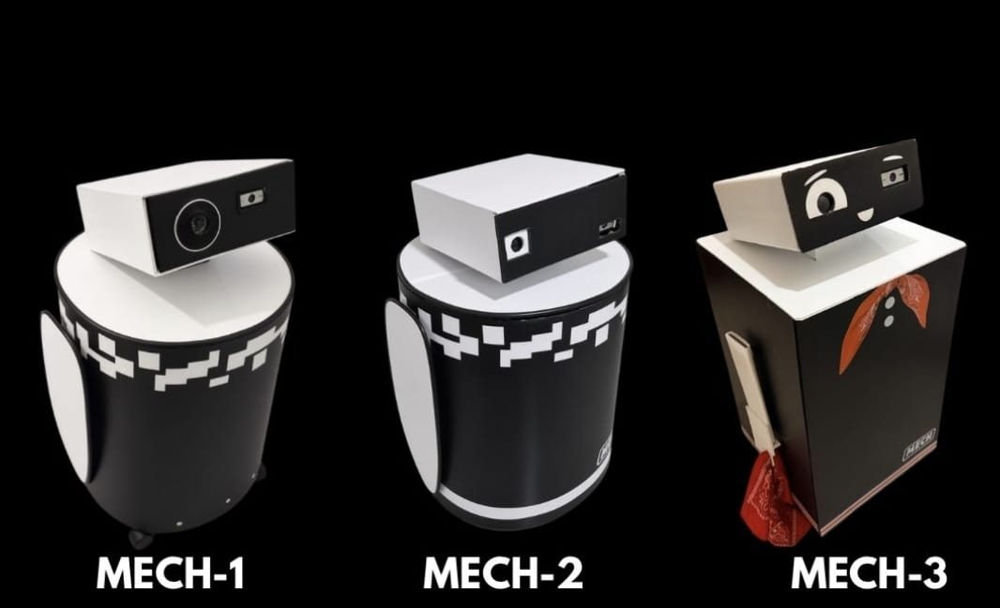
El modelo de lanzamiento: voz, proyección, movimiento y narración con IA. Estableció toda la base — estructura de aluminio y coroplast, orquestador en Python y firmware en Arduino.
Lentes de realidad virtual, batería propia de 8 horas y un diseño nuevo: mucho más versátil y llamativo.
Más accesible, portátil y resistente: subtítulos, batería de litio recargable y un cuerpo que se desarma para viajar.
Habla cuatro idiomas, juega trivia con el público y traduce conversaciones en tiempo real.
Un modelo aún más universal, con más idiomas e indicadores más precisos.
EN COMPETENCIA
MECH ha competido en tres eventos oficiales de la WRO, y cada modelo llegó más lejos que el anterior: MECH‑2 ganó la regional de Guanacaste y MECH‑3, la final nacional de Costa Rica en la categoría Future Innovators.
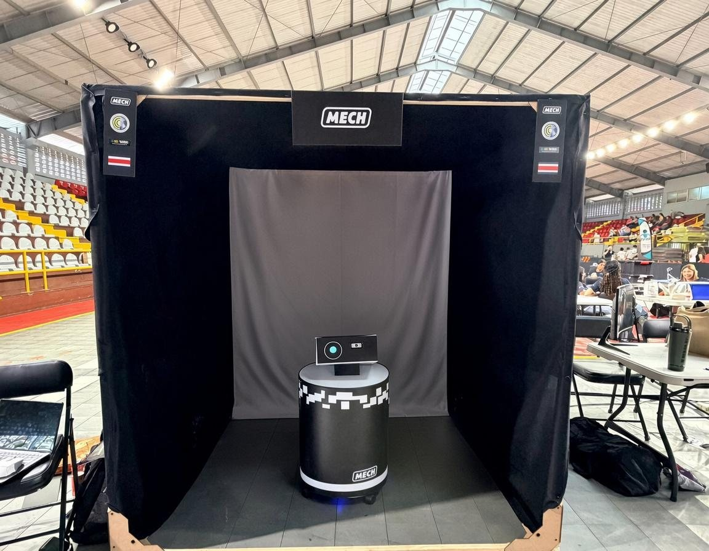
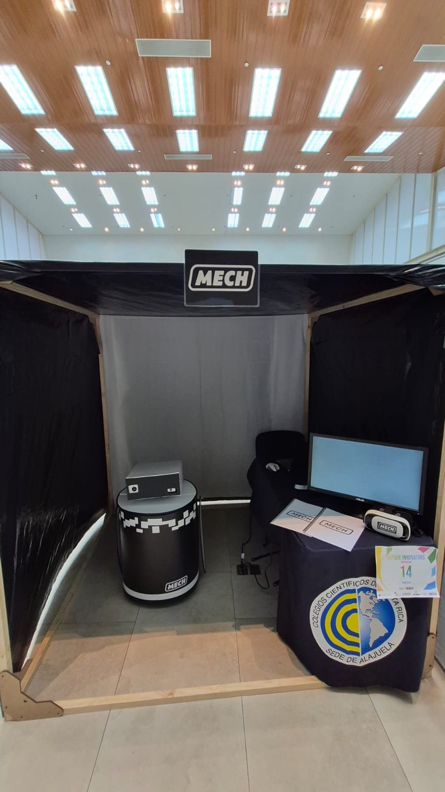
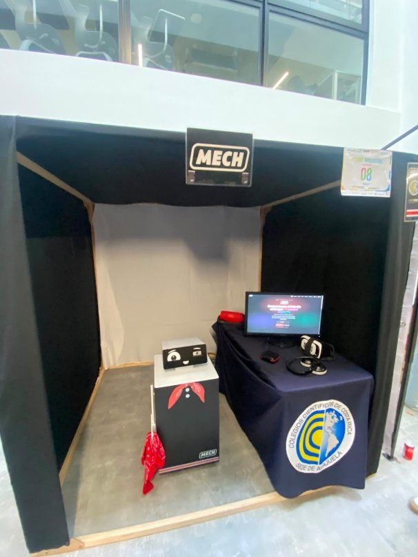
MECH‑2 · QUÉ CAMBIÓ
Una experiencia inmersiva a nivel individual, que se adapta mejor a las preferencias de cada usuario.
Una apariencia más atractiva para el público general, adaptada a los sistemas y sensores mejorados.
Energía suficiente para sostener todos los sistemas con una autonomía de 8 horas: un día completo.
Mayor compatibilidad con las funciones de audio, para evitar errores en la respuesta o en el guion.


MECH‑3 · EL MODELO ACTUAL
Los seis aspectos que lo convierten en una versión más eficiente que sus predecesores — y el modelo con el que el equipo ganó la final nacional.
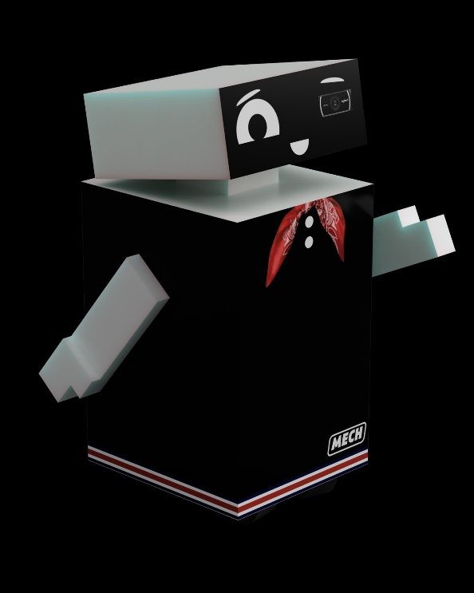
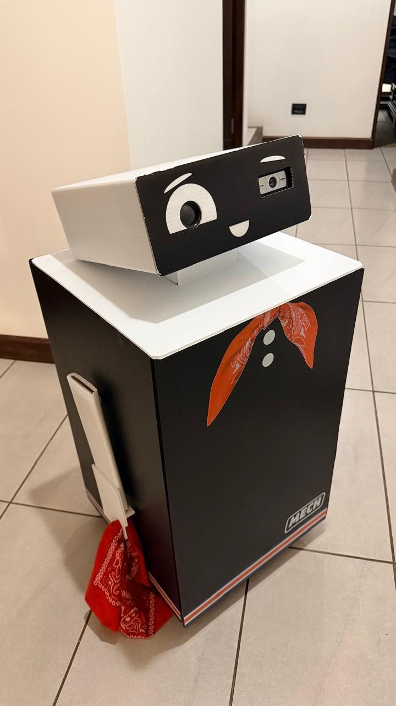
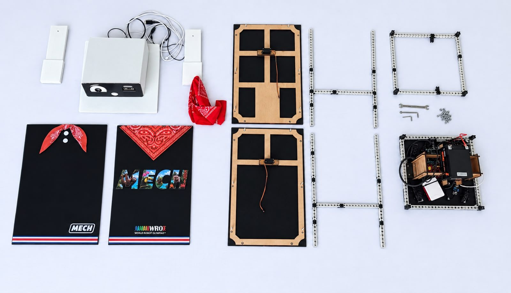
El tercer modelo se separa en piezas para transportarlo con facilidad de un evento a otro.
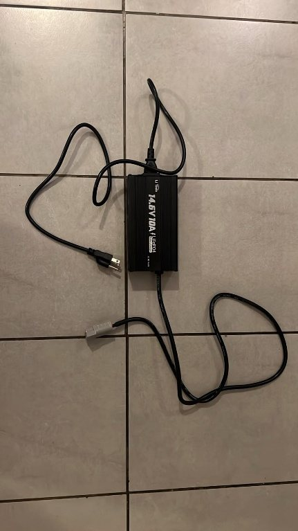
Un cargador de batería incluido, para que el usuario pueda usarlo con total versatilidad.
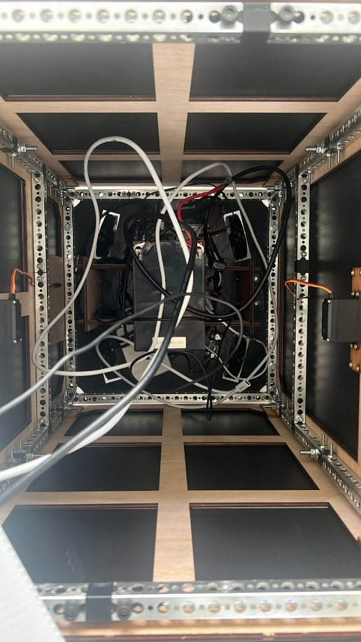
Vista superior de los sistemas y circuitos internos, reorganizados de forma más compacta.
BITÁCORA DE MECH‑3
Desliza para ver la evolución →
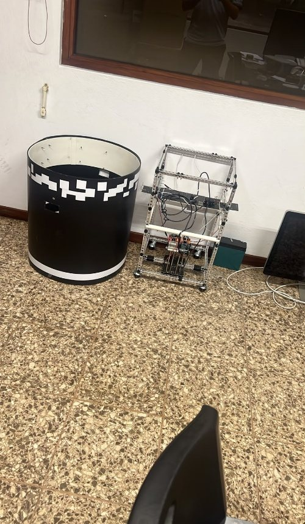
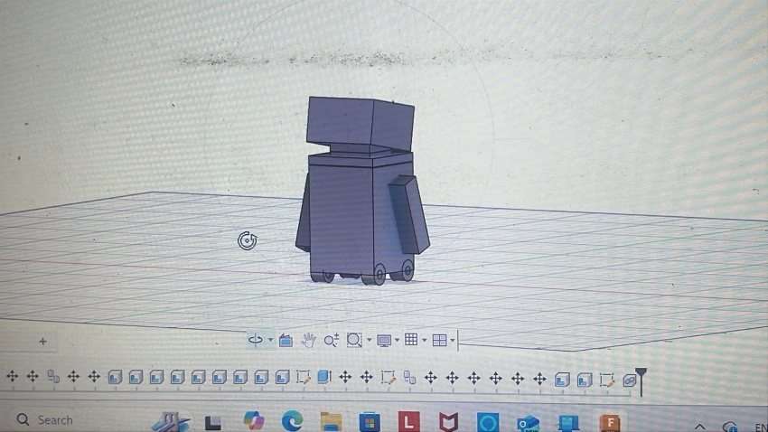
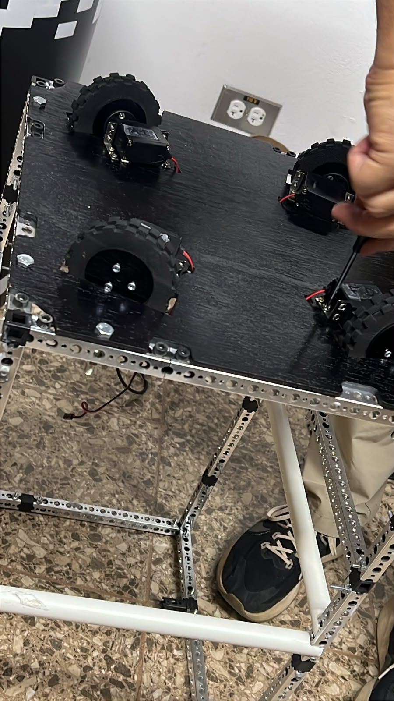
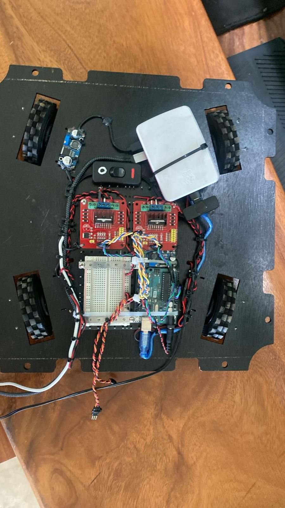
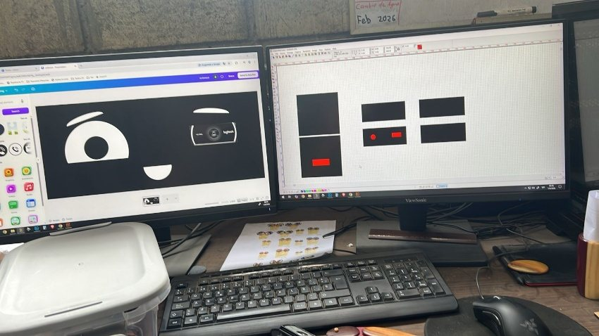
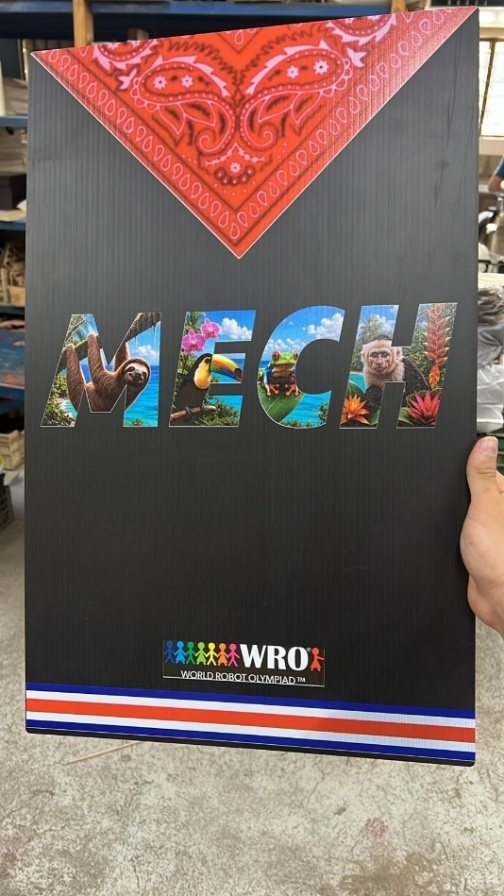
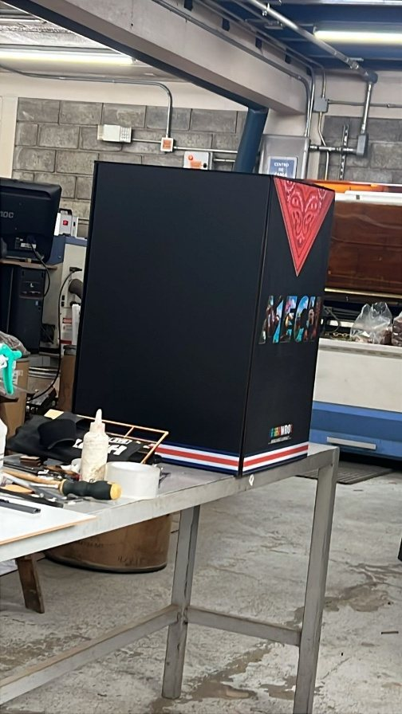
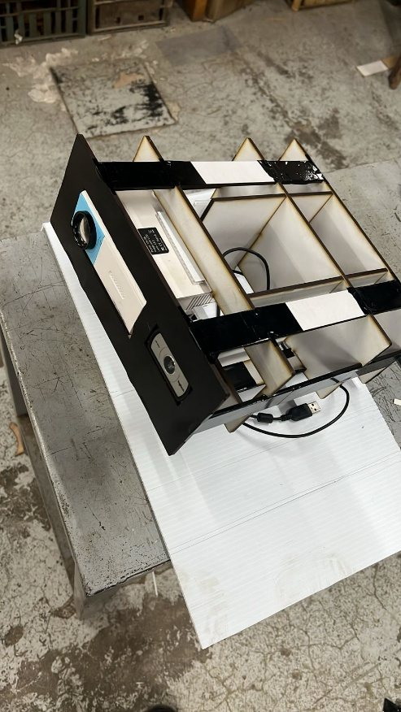
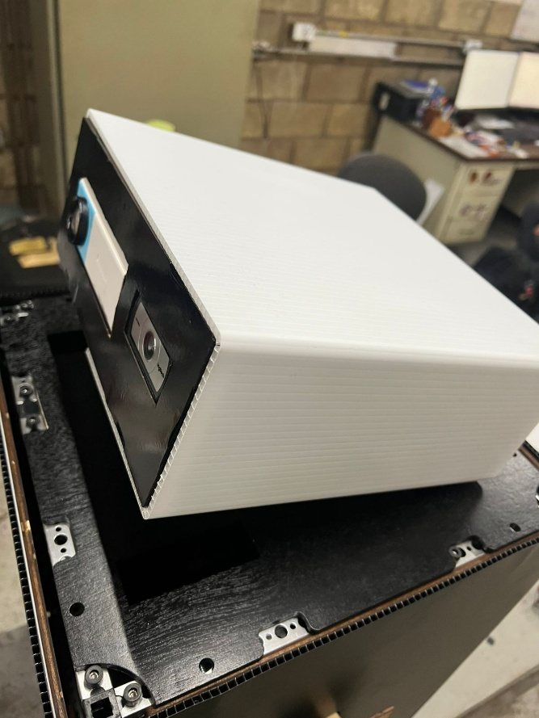
DISEÑO 3D DE MECH‑3


MECH‑4 · A PUNTO DE LANZARSE
Las siete mejoras que ya se implementaron en el próximo modelo.
Español, inglés, francés y portugués: el robot ya puede usarse en otras regiones del mundo.
Hace preguntas sobre lo que acaba de contar, para un aprendizaje dinámico, interactivo y eficiente.
Permite conversar a dos personas que hablan idiomas distintos.
Pausa la presentación en cualquier momento para cambiar el tema de conversación.
Para que el robot dependa al 100% de una sola fuente de energía.
Un cargador nuevo que completa la carga el doble de rápido y mejora la vida de la batería.
Ligeros cambios de diseño que realzan su aspecto moderno.
LO QUE VIENE
El equipo ya prepara un modelo aún más universal: más idiomas a los que puede acceder e indicadores más precisos que lo hagan todavía más versátil. Y seguirá buscando nuevas funciones según lo que reporten los usuarios o lo que el equipo considere importante.